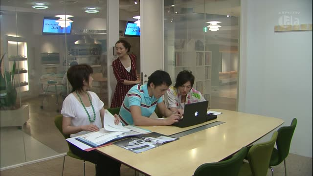
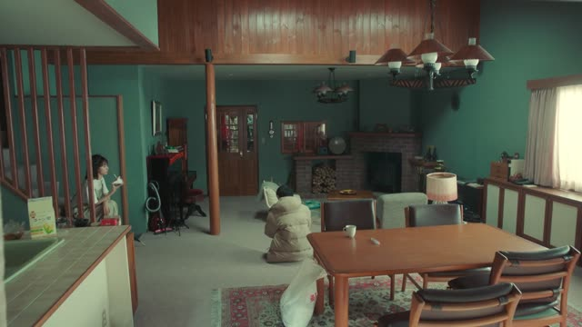
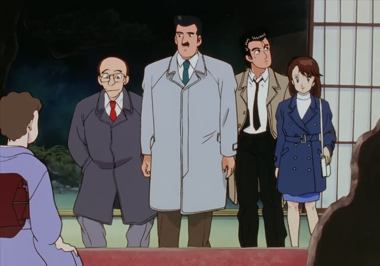
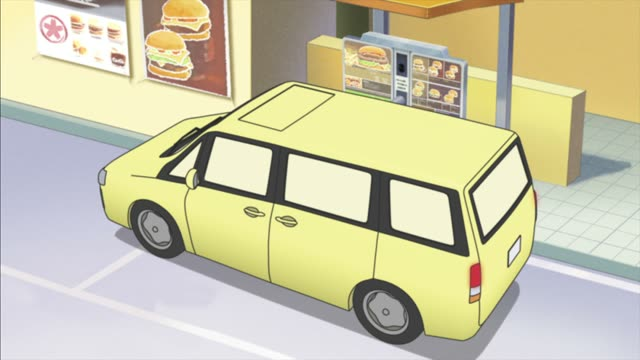
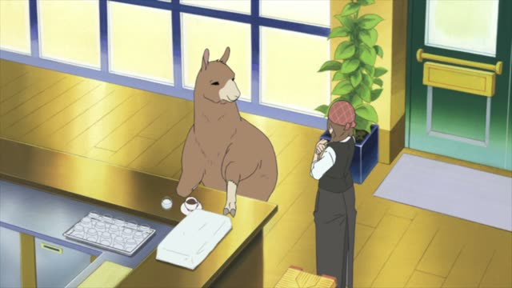
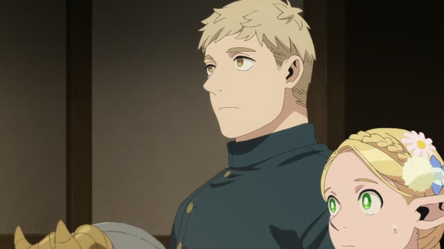
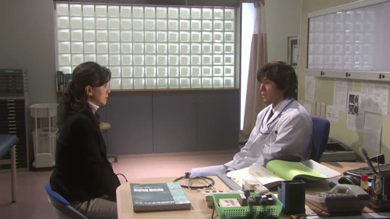
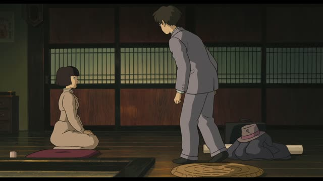

お～になる

Kekkon Dekinai Otoko · Episode 8
お客さまがお見えになりました。
"Your guest has arrived."
お + ます-stem + になる makes almost any verb respectful: 帰ります → お帰りになる, 待ちます → お待ちになる. It raises up the person doing the action.
On this card, an assistant announces a visitor. お見えになる is a respectful "come". ました makes it polite.
Verbs with their own special word (食べる → 召し上がる) usually use that instead. With ください it becomes a polite request: お座りください.

Quartet · Episode 6
お帰りになるの、ずっと待ってたんですよ。
"I've been waiting the whole time for you to come home."
On this card, Suzume talks about Maki's husband, with exaggerated respect. お帰りになる = respectful 帰る.
Quick Examples
A receptionist.
社長はもうお帰りになりました。
"The president has already gone home."
PoliteA host to a guest.
どうぞ、お座りください。
"Please, have a seat."
お～ください: polite request.
PoliteAt a hotel.
こちらでお待ちになってください。
"Please wait here."
PoliteAsking a guest.
この本、もうお読みになりましたか？
"Have you read this book yet?"
PoliteWith and without
先生は帰りました。
"The teacher went home." Polite.
先生はお帰りになりました。
"The teacher has gone home." Respectful.
Examples from Media

Oishinbo · Episode 12
はい、お見えになっておられます。
"Yes, he is here already."

Shirokuma Cafe · Episode 4
受け渡し窓口までお進みになって、お待ちください。
"Please move on to the pickup window and wait."

Shirokuma Cafe · Episode 41
笹子さんもお座りになったらいかがです？
"Why don't you have a seat too, Sasako?"

Dungeon Meshi · Episode 21
さあ、お掛けになってください。
"Please, have a seat."

1 Litre of Tears · Episode 7
一度お会いになってみませんか？
"Would you like to meet her once?"

The Wind Rises
お休みになりました。
"They've gone to bed."
Vinland Saga · Episode 17
アヴァロンからお戻りになられるのをな。
"(Waiting) for the king to return from Avalon."
なられる: extra respect on top.
Nausicaä of the Valley of the Wind
ユパ様がお帰りになったんだ！
"Lord Yupa has come back!"